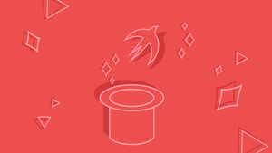

Inspiração Diária
Comece o dia com energia e propósito. Pequenos hábitos positivos, como agradecer ou planejar suas metas, podem transformar sua rotina em algo mais leve e produtivo.
Saiba mais
Comece o dia com energia e propósito. Pequenos hábitos positivos, como agradecer ou planejar suas metas, podem transformar sua rotina em algo mais leve e produtivo.
Saiba mais
O conhecimento é um investimento que nunca perde valor. Dedicar alguns minutos por dia para ler ou estudar abre portas para novas oportunidades e ideias.
Saiba mais
Estar atento ao que acontece ao nosso redor fortalece nossa visão de futuro. Conversar, compartilhar e ouvir diferentes perspectivas nos torna mais empáticos e preparados.
Saiba mais